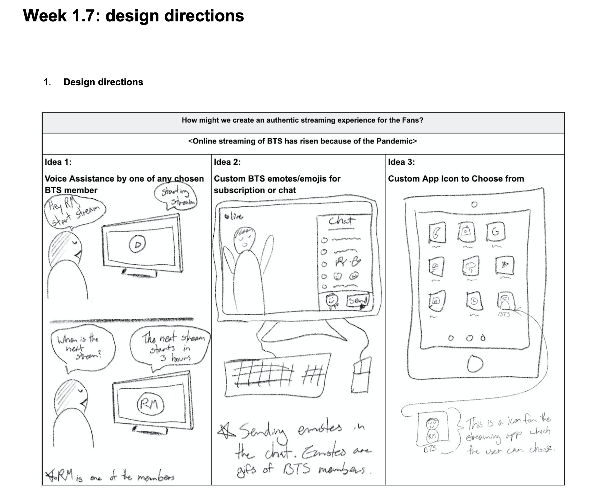
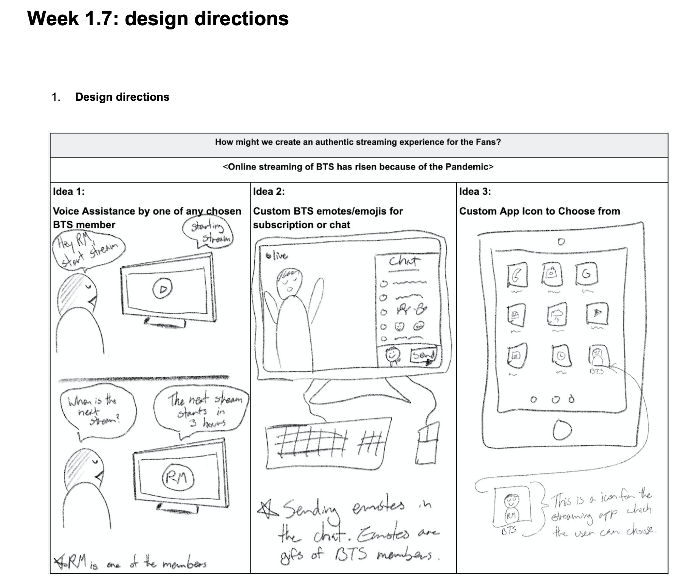

Reseach for Design: Enthographic
 

This was a course within the first block of the first semester.
The goal of this course was to start training to be a great UX Designer
by targeting a specific user group to find out information about them
and to know their needs. These information about the users were gathered
by Observation, Semi-Structured Interviews and Ethnographic interviews.
With the data collected, I made insights, and with those insights,
conclusions were made regarding how to solve their user problems with design elements.
The user group that I have chosen was "BTS Fans". My goal was to know more about
this specific user group, and to know how their useability needs were affected
by the COVID-19 pandemic.